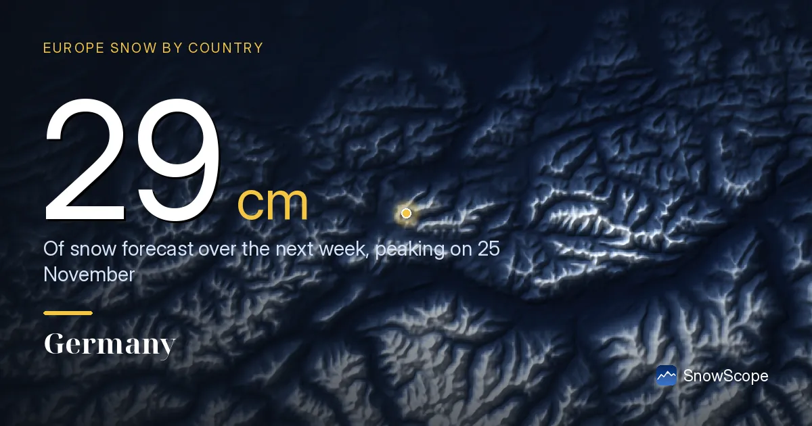
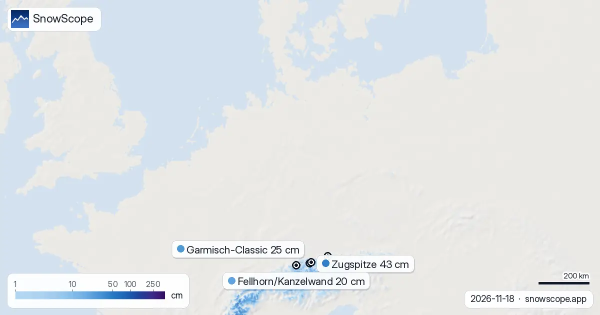

Germany: 29 cm of snow forecast over the next week, peaking on 25 November
A substantial snow event is building across German mountains over the next week. The heaviest falls arrive around 25 November, when forecasts suggest 13 cm in a single day across parts of the Bavarian and Allgäu Alps.
See the live snow forecast for Zugspitze in the SnowScope appSnow depth, powder alerts and the 3D map, free.
What the next seven days will bring
The pattern shifting into Germany differs sharply from the threadbare snow cover of recent weeks. Our snow model estimates that over the coming seven days, the highest elevations in the Bavarian and Allgäu Alps will accumulate around 29 cm of new snow by 2 December. The critical day is 25 November, which the model identifies as the snowiest single day, delivering approximately 13 cm across the region.
This forecast carries reasonable confidence, though mountain weather can shift. What matters for skiers is that the timing concentrates the heaviest precipitation into a narrow window, rather than spreading it thinly across many days. The storm builds gradually: expect lighter falls from 19 November onwards, then intensification as 25 November approaches.
| Resort | Snow depth | New snow, 72 h | Coming, next days | Top |
|---|---|---|---|---|
| Zugspitze | 43 cm | 15 cm | 20 cm | 2,627 m |
| Garmisch-Classic | 25 cm | 12 cm | 14 cm | 2,047 m |
| Fellhorn/Kanzelwand | 20 cm | 17 cm | 32 cm | 1,965 m |
| Wendelstein | 20 cm | 2 cm | 14 cm | 1,718 m |
| Oberer Maxlraineralm | 19 cm | 5 cm | 17 cm | 1,597 m |

Where the snow lands: altitude and terrain
Snow will not reach all elevations evenly. Our model suggests that above 1500 m, continuous cover becomes realistic; at 2000 m and higher, all slopes should hold meaningful snow by the end of the week. Below 1500 m, the picture remains patchy. The snow line currently sits around 1300 m, and while precipitation will fall to lower levels, much of it may not persist on the ground.
For ski areas, this means the highest summits gain the most. Zugspitze, Germany's apex at 2627 m, already holds 43 cm from recent storms and stands to receive a further 20 cm over the next three days. Fellhorn/Kanzelwand, sitting lower at 1965 m, sits at 20 cm today but faces a more generous allocation going forward, with forecasts suggesting 32 cm added in the three-day window. The lower mountains—Wendelstein at 1718 m and Oberer Maxlraineralm at 1597 m—will see gains, but snow preservation becomes uncertain below 1500 m.
The regional picture: who leads now
The Allgäu Alps command attention today. These mountains received 19 cm of new snow over the past 72 hours, nearly double the fall elsewhere. The Bavarian Alps follow with 15 cm in that same period. The Ore Mountains, by contrast, saw only 4 cm, illustrating how mountain snow distributes unevenly during transitional seasons.
Zugspitze holds the deepest measured snow across the country at 43 cm, though this sits 50 percent below its typical late-November average of 20 cm, a reminder that early-season snow remains scarce. Only 45 of Germany's 232 ski areas currently report snow at their measurement points; most terrain still lacks a reliable base. The coming week should expand that number substantially if the forecast holds.
What we see versus what we model
The measured snow at resorts tells one story; our area-wide model estimates across the 46,000 square kilometres we survey tell another. Yesterday, our model mapped 1460 square kilometres with snow. Today, 1510 square kilometres report cover. The growth is modest but steady—a sign that elevations above the snow line are building a foundation. Seven days ago, we measured 1700 square kilometres, so we have lost ground in that interval as the warm period that dominated early November continues to bite at lower elevations.
The incoming storm should reverse that deficit decisively. By early December, if forecasts verify, the white area should expand substantially, particularly above 1500 m where the temperatures favour lasting accumulation.
Looking further ahead
Beyond the peak around 25 November, our second-week outlook (26 November to 2 December) suggests continued activity. We model potential for up to 57 cm across the Alps during that eight-day window—more than double the first week. This hints that the pattern remains unsettled and moist, though confidence at that range decreases. What appears certain is that late November is shaping as a genuine snow season restart.
On the ground: a field perspective
Early-season snow in German mountains always carries caveats. Even 29 cm arriving next week sits on a thin base, and rocky outcrops will protrude where cover remains shallow. At elevations below 1500 m, rocks will likely remain visible after the storm. The transition zone between 1300 and 1500 m behaves unpredictably—some valleys trap cold and preserve snow; others drain warmth and wash it away. Skiers should check local conditions closely and expect variable quality.
Tips for skiers
- Watch the Allgäu Alps and Bavarian Alps from 25 November onwards. These mountains receive the heaviest modelled snow and sit at elevations where accumulation persists.
- Favour elevations above 1500 m for the most reliable coverage. Below this height, early-season snow often thins or disappears; scope the terrain carefully before committing.
- Zugspitze and Garmisch-Classic will see the deepest totals and should offer the most playable conditions by week's end, though early-season cover always carries thin patches.
- Before exploring off-piste terrain, check the official avalanche bulletin for the region. Early snow on steep slopes can slide unpredictably.
- Early-season bases are thin. Rocks and vegetation may emerge through fresh snow, particularly on lower slopes and south-facing aspects.
About these numbers
Resort snow depths are the deepest snow on the resort's upper slopes from the SnowScope snow model (about 1 km, run of 18 November); they are estimates for an area, not a measurement at one point. Station values are measurements on the date shown. Forecasts can change. Always read the official avalanche bulletin before going off-piste.
Cite this report
For research, teaching or the press: the numbers and charts are free to reuse under CC BY 4.0 with this citation.
SnowScope (2026), Germany: 29 cm of snow forecast over the next week, peaking on 25 November, https://snowscope.app/blog/en/2026/11/germany-snow-on-the-way-18-november-2026.html, accessed 2026-11-18
SnowScope (Atlas Labs). (2026, November 18). Germany: 29 cm of snow forecast over the next week, peaking on 25 November. SnowScope snow reports. https://snowscope.app/blog/en/2026/11/germany-snow-on-the-way-18-november-2026.html
BibTeX
@misc{snowscope2026germanysnowontheway18nov,
author = {{SnowScope (Atlas Labs)}},
title = {Germany: 29 cm of snow forecast over the next week, peaking on 25 November},
year = {2026},
month = nov,
howpublished = {\url{https://snowscope.app/blog/en/2026/11/germany-snow-on-the-way-18-november-2026.html}},
note = {Published 2026-11-18 13:56 UTC; accessed 2026-11-18}
}· CC BY 4.0 · Methods, data and tools →
Zugspitze: snow and temperature by height, this winter vs last (tools) →
Follow Zugspitze
Free: a message when fresh snow is coming, and the forecast every morning.
More snow reports

Slovenia has only 6 % white cover today against Austria's 34 %. Fresh snow in the Julian Alps offers the best chance for early season runs. Data from 17 November.

December snow odds from 46 winters and checked day prices: Ski Cooper $49, Les 3 Vallées €75.70, Oukaïmeden no official tariff. Where a cheap December ski day works.

Freezing level reaches 1,500 m at Banff Sunshine Village on November 19. Fresh snow fell across Western Canada in the last 72 hours, but rain threatens the new powder.